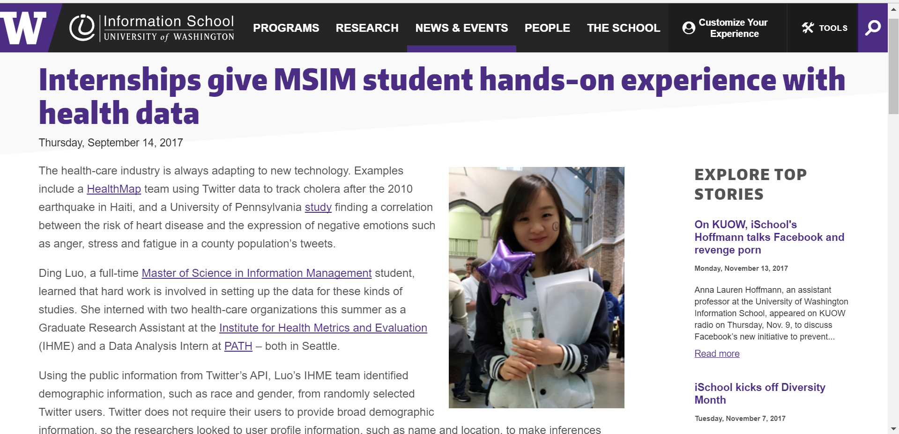

Internship Story
Internships give MSIM student hands-on experience with health data
Full Content:
The health-care industry is always adapting to new technology. Examples include a HealthMap team using Twitter data to track cholera after the 2010 earthquake in Haiti, and a University of Pennsylvania study finding a correlation between the risk of heart disease and the expression of negative emotions such as anger, stress and fatigue in a county population’s tweets.
Ding Luo, a full-time Master of Science in Information Management student, learned that hard work is involved in setting up the data for these kinds of studies. She interned with two health-care organizations this summer as a Graduate Research Assistant at the Institute for Health Metrics and Evaluation (IHME) and a Data Analysis Intern at PATH – both in Seattle.
Using the public information from Twitter’s API, Luo’s IHME team identified demographic information, such as race and gender, from randomly selected Twitter users. Twitter does not require their users to provide broad demographic information, so the researchers looked to user profile information, such as name and location, to make inferences about race and gender.
IHME sees its role as “creating the most complete and up-to-date roadmap to help policymakers and donors determine how best to help people live longer, healthier lives.” They get into the details of data.
“IHME wants to use Twitter to analyze the data of people who say they have a cold or some other disease. It will take less time than regular data collection,” says Luo.
Luo had no previous experience in data science or data modeling prior to the 3-month IHME internship, so she learned how to gather and label data and build predictive models. She plans to take the Data Science and Business Intelligence specializations in her MSIM program next year, so she selected her internships to give her relevant hands-on experience.
Her PATH internship involved visualizing data for better communication to the public. According to its website, PATH is the leader in global health innovation. It’s an international nonprofit organization that saves lives and improves health, especially among women and children.
Luo’s team at PATH looked at survey data, taken at different phases in two African countries’ health projects, and analyzed it to determine success. The data were uploaded to a Tableau dashboard to allow for easy visualization of the project impact.
The Tableau skills she learned from her classes transferred to her PATH internship. “PATH just stared using Tableau and they did not have a very standard format for dashboards, so I could easily create a professional format for them. My new supervisor was really impressed,” says Luo.
The PATH internship was less technical but equally important, as it helped Luo understand the importance of communicating data to stakeholders – for example, Bill Gates used the data when he visited the PATH project in Tanzania in September.
Luo also liked the culture at PATH. Her team shared data with other teams and offered their knowledge widely. She admired the collaborative attitude.
“You are not just doing something to help the organization, but also making some contribution to society and other countries. It gives me more motivation for my work when I think about the impact of our projects,” says Luo.